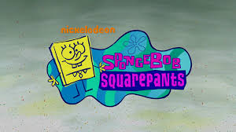
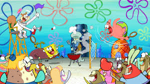
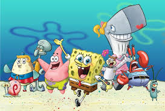

Spongebob Squarepants
Nickelodeon Spongebob Squarepants
by Wikipedia, the free encyclopedia-Dec 02 2021
SpongeBob SquarePants is an American animated television series created by marine science educator and animator Stephen Hillenburg that first aired on Nickelodeon as a sneak peek after the 1999 Kids' Choice Awards on May 1, 1999, and officially premiered on July 17, 1999. It chronicles the adventures of the title character and his aquatic friends in the underwater city of Bikini Bottom. The series received worldwide critical acclaim, and had gained popularity by its second season. As of 2019, the series is the fifth-longest-running American animated series. Its popularity made it a multimedia franchise, the highest rated Nickelodeon series, and the most profitable intellectual property for Paramount Consumer Products. By 2019, it had generated over $13 billion in merchandising revenue.
Many of the series' ideas originated in The Intertidal Zone, an unpublished educational comic book Hillenburg created in 1989 to teach his students about undersea life. Hillenburg joined Nickelodeon in 1992 as an artist on Rocko's Modern Life. After Rocko was cancelled in 1996, he began developing SpongeBob SquarePants into a television series that same year, and in 1997, a seven-minute pilot was pitched to Nickelodeon. The network's executives wanted SpongeBob to be a child in school, but Hillenburg preferred SpongeBob to be an adult character. He was prepared to abandon the series, but compromised by creating Mrs. Puff and her boating school so SpongeBob could attend school as an adult.
The series has run for a total of fourteen seasons, and has inspired three feature films: The SpongeBob SquarePants Movie (2004), Sponge Out of Water (2015), and Sponge on the Run (2020). Two spin-off series, Kamp Koral: SpongeBob's Under Years and The Patrick Star Show, premiered in 2021. As of February 2022, four additional films are planned: three character spinoff films for Paramount+ and Netflix, and a theatrical SpongeBob film. The fourteenth season of the main series was announced in March 2022,[9] and premiered in November 2023. In September 2023, the show was renewed for a fifteenth season.
SpongeBob SquarePants has won a variety of awards including six Annie Awards, eight Golden Reel Awards, four Emmy Awards, two BAFTA Children's Awards, and a record-breaking twenty-one Kids' Choice Awards. A Broadway musical based on the series opened in 2017 to critical acclaim. The series is also noted as a cultural touchstone of Millennials and Generation Z.
The series revolves around the title character and an ensemble cast of his aquatic friends. SpongeBob SquarePants is an energetic and optimistic yellow sea sponge who lives in a submerged pineapple. SpongeBob has a childlike enthusiasm for life, which carries over to his job as a fry cook at a fast food restaurant called the Krusty Krab. One of his life's greatest goals is to obtain a boat-driving license from Mrs. Puff's Boating School, but he never succeeds. His favorite pastimes include "jellyfishing", which involves catching jellyfish with a net in a manner similar to butterfly catching, and blowing soap bubbles into elaborate shapes. He has a pet sea snail with a pink shell and a blue body named Gary, who meows like a cat.